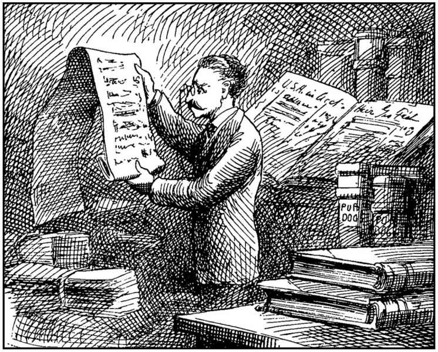

这是史实。不像“约翰·威廉逊·麦肯齐[2]签订的大宗牛肉合同”，它不是什么荒唐的戏言，而是一篇翔实的叙述；其中所列举的种种事实与情况，在漫长的半个世纪里曾经一再引起美国国会的重视。
我不愿意将乔治·费希尔的这件事称之为对美国政府和人民进行的一系列花样层出不穷、手法毒辣无比的大骗局（因为，直到如今还没做出这样的结论；而我认为，如果一个作者在这种情况下就从事贬责，或进行谩骂，那对他说来将是一个严重的错误），而只是提供一些事实证据，让读者去下结论。这样，我们就不至于冤枉了任何人，同时对自己也可以问心无愧了。
那大约是在一八一三年九月一日，当时克里克战争[3]正在佛罗里达进行，公民乔治·费希尔先生的庄稼、牲口和房屋被一伙人毁坏了，那伙人可能是印第安人，也可能是追击印第安人的美国部队。法律有明文规定，如果毁坏那些财产的是印第安人，美国政府不必对费希尔进行赔偿；但如果是军队，那政府就对费希尔欠下了一笔赔偿损失的债款。
肯定乔治·费希尔认为他的财产是被印第安人毁坏的，因为，虽然此后他又活了几年，但是好像始终没向政府提出任何要求。
过了一个时期，费希尔死了，他的遗孀也改嫁了。此后，费希尔的玉米地受到侵犯的事已被人淡忘了又过了将近二十年，费希尔寡妇的后夫向国会提出申请，要求赔偿财产损失，呈文中援引了许多供词和证书，试图证明那财产是军队而不是印第安人毁坏的；说什么由于某种无法理解的原因，该部队存心焚烧了属于一个良民私人的，价值六百元的“房屋”（即几间小木板房），还毁坏了属于同一公民的其他各项财产。但是国会不相信军队会是那样一群白痴（他们已经赶上，而且击溃了一帮印第安人，然后再像申请中所证明的那样对费希尔的财产进行破坏），甚至会不惜亲自动手，从容不迫地继续进行破坏，彻底完成印第安人刚开始投入的工作。于是国会于一八三二年驳回了乔治·费希尔继承人提出的申请，一文钱也没偿付他们。
此后，我们再没听到有关他们的消息，直到一八四八年，就是他们第一次企图要求财政部赔偿损失后的第十六年，也就是农庄遭到破坏，主人死后的整整一个世代。那时候，费希尔新的一代继承人突然出面，提出了一份要求赔偿的清单。第二审计官偿付了他们八千八百七十三元，该数相当于对费希尔所受的损失作价的半数。审计官说，从证据中可以看出，那一次的破坏至少有一半是“在部队发动追击前”由印第安人造成的，政府当然无须负责那一半的损失。

一、以上是一八四八年四月间的事。到了一八四八年十二月，已故乔治·费希尔的继承人再一次出面，要求“修正”他们的赔偿损失清单。审计官当即为他们进行修正，但除了在原来的核算中发现了一个一百元的差错外，并没有再找到其他可以让他们占便宜的地方。然而，为了不使费希尔家族败兴而返，审计官最后决定向前追算，准予发给从第一次提出申请（一八三二年）起到领到赔偿费之日止那一段时期里应给的利息。这一来费希尔的继承人都高高兴兴地返回故乡，带回去八千八百七十三元十六年来所生的利息——相当于八千九百九十七元九角四分。本利合计达一万七千八百七十元九角四分。
二、整整一年过后，“受害的”费希尔家族一直安静无事——好像连他们也感到了满足。可是后来这些人又突然来向政府诉苦。那位首席检察官的爱国老人图舍[4]查遍了费希尔家族的发了霉的文件，又为那些“孤苦的后代子孙”发现了一个可钻的空子——最初发给的八千八百七十三元从财产被毁之日（一八一三年）起到一八三二年止的一段时间里应结的利息！结果是，将为数一万零四元八角九分的利息给了“贫乏待济的”费希尔家族。所以，现在我们得出的赔款是：第一次，是损失赔偿费八千八百七十三元；第二次，是这笔钱从一八三二年起到一八四八年止所生的利息八千九百九十七元九角四分；第三次，是这笔钱追算到一八一三年为止的利息一万零四元八角九分。总数为二万七千八百七十五元八角三分！如果一个人要为他的曾孙投资，还有什么办法能比这更好的呢？就让印第安人在他孙儿出生前的六七十年为他烧毁一片玉米地，然后煞有介事地把这一切都归咎于发了疯的美国军队吧。
三、说也奇怪，费希尔家族竟会让国会清静了五个年头——也许，更可能的是，在那一段时期里他们没能让国会听到他们的呼声。但是，到了一八五四年，他们终于使自己的意见上达，他们说服国会通过了一条法令，责成审计官重新审查这件事。可是这一回他们不幸栽了跟头，碰上了一位公正的财政部长（詹姆斯·格思里先生[5]），这件事全坏在这位先生手里。他直截了当地说，费希尔家族非但没资格拿到一文钱，而且那些“含辛茹苦的子孙”所获得的赔偿已经过分地多了。
四、所以，此后又间隔了一段安静的时期——这段时期总共经历四年之久，也就是一直持续到一八五八年。当时“人称其位、位庆得人”的那位陆军部长——是久享盛名的约翰·布·弗洛伊德[6]！这位才智不凡的人物一当权，那死后已被遗忘了的费希尔的“受难的”继承人就得救了。他们一窝蜂从佛罗里达赶到——怒潮汹涌般一大群人，搬来的仍旧是那些陈旧得发了霉的文件，交涉的仍旧是他们祖先世世代代传之无穷的玉米地。他们立即设法通过一条法令，将费希尔的材料从办事迟缓的审计官那里移交到头脑机灵的弗洛伊德手中。那弗洛伊德又是怎样处理这件事情呢？他说：“现在已经证实，在部队发动追击之前，印第安人就已经毁坏了他们所能毁坏的一切。”因此，他认为，部队所毁坏的肯定是“那些房屋，房屋内所有的东西，以及那些藏酒”（那是遭到破坏的财物中价值最小的一部分，总共只被估价为三千二百元），然后政府的部队赶走了印第安人，接着就从容不迫地进行了破坏——
地里二百二十亩玉米，三十五亩小麦，再有九百八十六头牲口！（瞧，那些年头里我国竟然有这样一支聪明得出奇的军队，这是弗洛伊德先生做出的结论——但不是一八三二年国会所做的结论。）
于是弗洛伊德先生做出裁决：政府不必赔偿印第安人所破坏的那些只值三千二百元的破烂了，但是应当负责赔偿部队所破坏的财产——包括以下项目（我摘自美国参议院印发的文件）：
元
巴西特河畔的玉米 3，000
牛 5，000
圈养猪 1，050
放养猪 1，204
小麦 350
皮革 4，000
亚拉巴马河畔的玉米 3，500
共计 18，104
弗洛伊德先生称他报告中所列的金额为“军队破坏的财产的足价”。他批准将这笔钱连同从一八一三年起结算的利息一并发给那些“三餐不饱的”费希尔家族。从这笔重新结算的总数中，扣除了以前已经支付给费希尔家族的几笔钱，然后将他们喜出望外的余数（略少于四万元）付给了他们，他们又回到佛罗里达，暂时安静了一些日子。现在他们祖先的农庄总共已经为他们挣了将近六万七千元现金。
五、读者以为这件事就此结束了吗？读者以为那些侥幸成功的费希尔家族从此心满意足了吗？现在就让我列举一些事实来说明吧。费希尔家族只安静了两年。后来他们又带着原先那些古老的文件，一窝蜂从佛罗里达肥饶的沼泽地里赶来围攻国会。国会于一八六〇年六月一日挂了降旗，指令弗洛伊德先生再一次仔细检查那些文件，然后支付那张账单。当局命令财政部的一名办事员先查核那些文件，再向弗洛伊德先生汇报，究竟还欠那些“饿瘦了的”弗希尔家族多少钱。这位办事员（如果需要的话，我可以随时提供他的姓名）发现，文件中显然有一个数字是新近明目张胆伪造的：在一位证人的证词中，一八一三年佛罗里达的玉米价要比该证人原先的估价高出了一倍！那个办事员不但提请他的上司留心这件事，而且在草拟案件摘要时呈请他们特别注意这一点。结果那份摘要根本不曾上达国会，国会对费希尔文件中出现篡改伪造的事连个影子也不知道。然而，就根据这些提高了一倍的估价（同时根本不理会办事员在签呈中指出那些数字明明是新近伪造的），弗洛里德在他新拟的报告中说：“根据证词，特别是根据有关玉米庄稼的那一部分，必须发给远比以前审计官或我本人估价更高的赔偿。”于是他将每亩的产量估计为六十蒲式耳（比佛罗里达的产量高出一倍），然后秉公办理，只准许庄稼的半数，但是却将那一半庄稼估价为每蒲式耳价值二元五角，而国会图书馆中有不少陈旧的账册和公文却暴露了未经伪造前费希尔的证件的本来面目——换一句话说，在一八一三年秋天，玉米每蒲式耳只值一元二角五分至一元五角。等到这一切都拟就以后，你猜弗洛伊德先生又干了些什么？弗洛伊德先生（正像他一本正经地声称的，“急于认真执行那份合法的遗嘱”），就着手制订一份赔偿费希尔损失的全新的账单，他心安理得地在这份新制的账单上全部撇开了印第安人——凡是有关破坏费希尔的财产的事，一概不去归咎于他们，甚至对费希尔指控他们焚烧木板房，痛饮威士忌酒、砸烂陶器等事也只是“感到遗憾”，而将全部的损失，包括所有应偿还的欠款，都推给了那些愚蠢的美国军队！不仅如此，他还利用那份伪造的文件，将“巴西特河畔”玉米的损失提高了一倍，再利用它，将“亚拉巴马河畔”玉米的损失整整提高了二倍。弗洛伊德先生的这份精心设计并全力执行的新账单包括以下各项（这也是我从美国参议院印发的文件中抄录来的）：
美国政府应偿付已故乔治·费希尔遗嘱代理人以下各款
1813年 牛550头，每头10元 5，500.00
放养猪86头 1，204.00
圈养猪350头 1，750.00
巴西特河畔玉米地100亩 6，000.00
威士忌酒8大桶 350.00
白兰地酒2大桶 280.00
甜酒1大桶 70.00
丝绸呢绒等存货 1，100.00
小麦35亩 350.00
皮革2，000张 4，000.00
备用的皮衣和帽子 600.00
备用的陶器 100.00
铁匠木匠工具 250.00
烧毁的房屋 600.00
葡萄酒4小桶 48.00
1814年 亚拉巴马河畔玉米地120亩 9，500.00
豌豆、饲料等 3，250.00
共计 34，952.00
22，202元给出的利息：自1813年7月起，
至1860年11月止，共47年零4个月，共：
63，053.68
12，750元给出的利息：自1814年9月起，
至1860年11月止，共46年零2个月，共：
35，317.50
合计 133，323.18
这一次他把所有的一切都加进去了。他甚至不考虑印第安人砸烂了陶器，痛饮了那四打（红醋栗）酒。所以，讲到对“健谈豪饮”所独具的真知灼见，岂止是同时代，即便是任何时代里也休想有人能比得上约翰·布·弗洛伊德的了。弗洛伊德先生从以上的总数中扣除了已经付给乔治·费希尔那些锱铢必较的继承人六万七千元，然后宣布政府还欠他们六万六千五百一十九元八角五分，弗洛伊德先生欣然同意，批示“相应将此数发给已故乔治·费希尔的遗产管理人或代理人”。
但是，对那些“处于困乏中的孤儿”来说，这件事也真够叫他们伤心，就在这当儿，一位新总统[7]上任了，布坎南[8]和弗洛伊德下台了，所以结果他们并没能够得到那一笔钱。一八六一年国会所做的第一件事，就是取消了一八六一年六月一日通过的、弗洛伊德先生根据他结算出那些赔款的决议案。这一来弗洛伊德（当然此外还有乔治·费希尔的那些继承人）只得暂时不在银钱上打主意，他们参加了南部联邦军队[9]，为他们的国家效力去了。
乔治·费希尔的继承人后来战死了吗？没有。他们现在（一八七〇年七月）刚回来，正在托那个常常会害羞脸红的家伙加勒特·戴维斯出面，请求国会再一次偿付由着一帮不负责的印第安人给玉米和威士忌酒造成了损失而此后就不时一再追索，但永远偿还不清的欠账，但是，因为历时过久，连办事那样一丝不苟的政府也很难顺当地追查清楚这件事了。
再说，以上所说的都是实事。它们都是史实。如果有人对它们怀疑，那他尽可以去函国会大厦参议院公文部，索阅第三十六届国会第二次会议文件编号H.R.Ex.Doc.第21号，以及第四十一届国会第二次会议文件编号S.Ex.Doc.第106号，将此事调查一个水落石出。整个这件事都已记载在行政法院报告第一卷里。
我相信，只要美洲存在一天，已故乔治·费希尔的继承人就仍会从佛罗里达的沼泽地去华盛顿朝圣，请求为他们的损失再稍许多赔偿一些钱（即使已经悉数收齐了那六万七千元，他们仍然会说，它只抵政府对那块生财有道的玉米地应偿付赔款的四分之一），而且，只要有朝一日还有兴致光临，他们就可以托加勒特·戴维斯把他们那些吸血鬼的清单拖到国会去。但这并不是一个绝无仅有的祖传的骗局，并不是一个通过受骗的美国财政部悄悄地由父子世代相传的骗局（我们是不是可以管它叫“骗局”呢——前面我曾一再指出，它尚未经证实哩）。
一八七〇年
[1] 几年前，大约是在一八六七年，当本文初发表时，几乎没人相信我所说的是真话，都以为它是一篇戏言。然而，看来最近一般人已经不再认为，在前一个时期里诈骗政府钱财是一件新鲜事了。就在那个人指引我去找有关这件事的文件时，他就在华盛顿使用了成千上万美元，为一家邮轮公司走门路，谋求一笔补助金——这件事经过了很长时间没暴露，但最后真相大白，国会还为此进行了调查。——原注
[3] 克里克属美印第安人的一族，现都定居俄克拉何马州。“克里克”的意思是“小河”，当时印第安人部落聚居地区多港汊，故有此称。
[4] 艾萨克·图舍（1792—1869），美国政客，一八四八任美国首席检察官。
[5] 詹姆斯·格思里（1792—1869），美国律师，政党领袖，一八五三至一八五七年任财政部长。
[6] 约翰·布坎南·弗洛伊德（1806—1863），美国政客，一八五七至一八六〇年任陆军部长。
[7] 指亚伯拉罕·林肯（1809—1865），美国第十六任总统（1861—1865）。
[8] 詹姆斯·布坎南（1791—1868），美国第十五任总统（1857—1861）。
[9] 美国亚拉巴马等十一州，由于维护奴隶制，一八六〇至一八六一年相继退出中央政府，成立南部联邦，进行内战。
注 释
[1] 几年前，大约是在一八六七年，当本文初发表时，几乎没人相信我所说的是真话，都以为它是一篇戏言。然而，看来最近一般人已经不再认为，在前一个时期里诈骗政府钱财是一件新鲜事了。就在那个人指引我去找有关这件事的文件时，他就在华盛顿使用了成千上万美元，为一家邮轮公司走门路，谋求一笔补助金——这件事经过了很长时间没暴露，但最后真相大白，国会还为此进行了调查。——原注
[2] 前作为“约翰·威尔逊·麦肯齐”。
[3] 克里克属美印第安人的一族，现都定居俄克拉何马州。“克里克”的意思是“小河”，当时印第安人部落聚居地区多港汊，故有此称。
[4] 艾萨克·图舍（1792—1869），美国政客，一八四八任美国首席检察官。
[5] 詹姆斯·格思里（1792—1869），美国律师，政党领袖，一八五三至一八五七年任财政部长。
[6] 约翰·布坎南·弗洛伊德（1806—1863），美国政客，一八五七至一八六〇年任陆军部长。
[7] 指亚伯拉罕·林肯（1809—1865），美国第十六任总统（1861—1865）。
[8] 詹姆斯·布坎南（1791—1868），美国第十五任总统（1857—1861）。
[9] 美国亚拉巴马等十一州，由于维护奴隶制，一八六〇至一八六一年相继退出中央政府，成立南部联邦，进行内战。